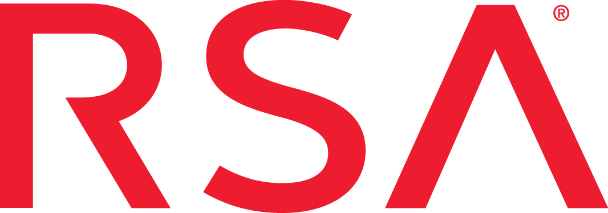

<h1>ember-redux</h1> <p style="margin-top: -20px; color: blue">Toran Billups</p> <h5 style="color: grey">// thank you <span>&nbsp;&nbsp;</span></h5><br ><br > <br ><br > <br ><br > <br ><br > <br ><br > <br ><br >
<h1><span style="color: red;">1)</span> what? 0 => redux</h1> <h1><span style="color: green;">2)</span> why? TCO</h1> <h1><span style="color: blue">3)</span> tradeoffs?</h1><br ><br > <br ><br > <br ><br > <br ><br > <br ><br > <br ><br >
<h1><span style="color: darkred">explicit</span> > implicit</h1> <br ><br > <br ><br > <br ><br > <br ><br > <br ><br > <br ><br > <br ><br > <br ><br >
<h1>more <span style="color: darkorange">fun</span>ctional programming</h1> <br ><br > <br ><br > <br ><br > <br ><br > <br ><br > <br ><br > <br ><br > <br ><br >
<h1>new <span style="color: darksalmon">ecosystem</span></h1> <br ><br > <br ><br > <br ><br > <br ><br > <br ><br > <br ><br > <br ><br > <br ><br >
<h1>it's <span style="color: darkgreen">javascript</span></h1> <p>ember / glimmerJS / react / vueJS</p><br ><br > <br ><br > <br ><br > <br ><br > <br ><br > <br ><br >
<h1>question <span style="color: brown">everything</span></h1> <br ><br > <br ><br > <br ><br > <br ><br > <br ><br > <br ><br > <br ><br > <br ><br >
